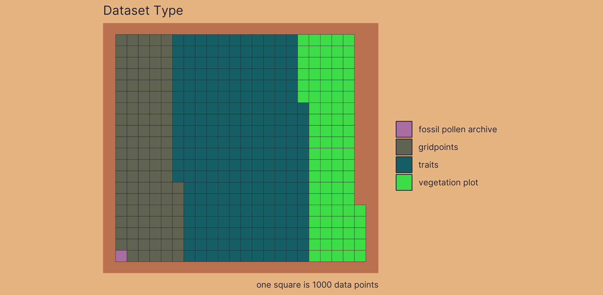
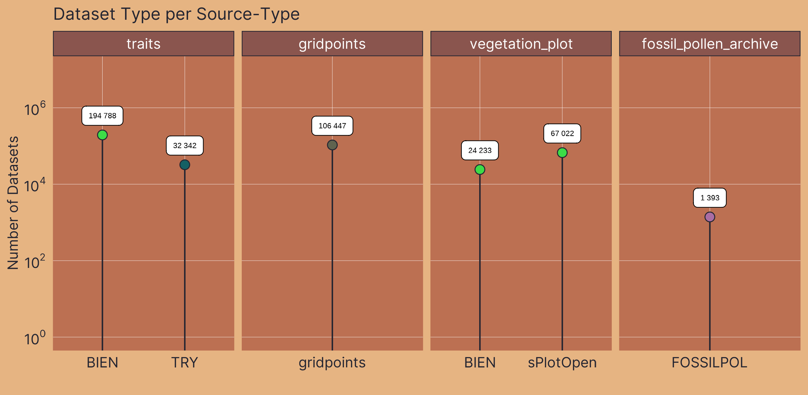
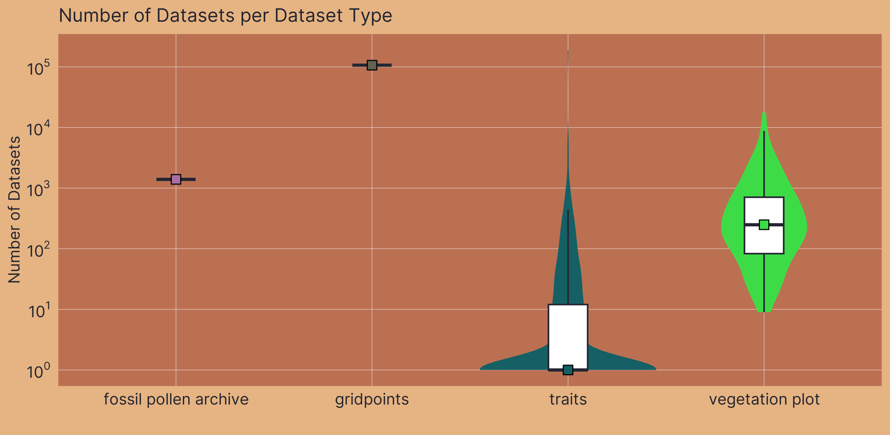
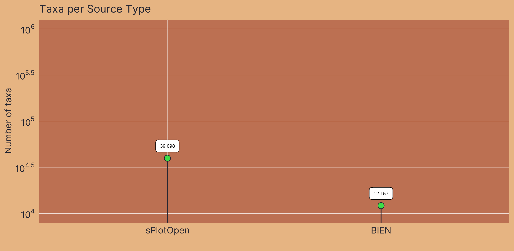
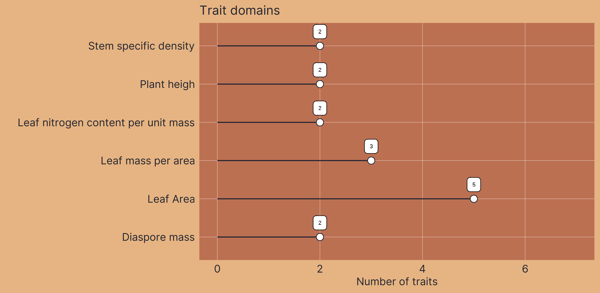
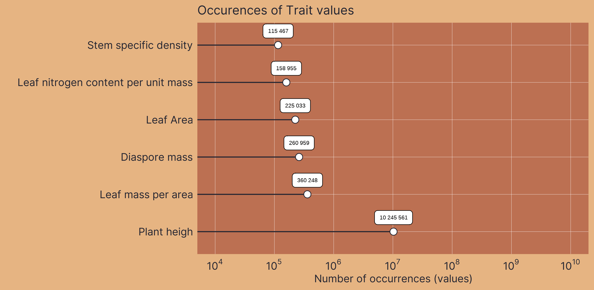

Section I: Description of VegVault
VegVault is a SQLite interdisciplinary database linking global paleo-, and neo-vegetation data with functional traits and abiotic drivers .
VegVault integrates data from multiple well-established sources to provide a comprehensive view of vegetation dynamics. By organizing data into clearly defined types and providing comprehensive referencing, VegVault supports detailed and high-quality ecological research. This structured approach ensures that data are accessible, reliable, traceable, and facilitate a wide range of analyses and applications across disciplines.
VegVault is organized into several sections to systematically manage the varying datasets it integrates. The main structure is the Dataset, which serves as the cornerstone of the database structure. Datasets are composed of Samples, representing individual data points within each dataset. Each Dataset will only contain several Samples if these differ in age. There are four types of Datasets:
- contemporary vegetation plots
- past vegetation (fossil pollen records)
- functional traits
- gridpoint (a dataset type created to hold abiotic data, see details in Section III).
For the contemporary (1) and past (2) vegetation Datasets, the Samples hold information about Taxa as derived directly from the primary data sources. Trait information is organised in separate Datasets (as they are associated with unique information about their spatio-temporal location, references, etc) but linked to the same Taxa codes as those taxa in the vegetation Datasets (if present). Moreover, each Taxa, disregarding of the source, is associated with classification information (i.e. species, genus and family name; see Section III).
Section II: Internal Database Structure
Dataset
The Dataset represents the main structure in the VegVault, serving as the keystone for organizing and managing data. Here we will explain some, but not all, of the features of the Dataset.
Dataset Type
The Dataset Type defines the most basic classification of each Dataset, ensuring that the vast amount of data is categorized systematically. Currently, VegVault contains the following types of Datasets:
vegetation_plot: This type includes contemporary vegetation plot data, capturing contemporary vegetation characteristics and distributions.fossil_pollen_archive: This type encompasses past vegetation plot data derived from fossil pollen records, providing insights into historical vegetation patterns.traits: This type contains functional trait data, detailing specific characteristics of plant species that influence their ecological roles.gridpoints: This type holds artificially createdDatasetsto manage abiotic data, here climate and soil information

Dataset Source-Type
VegVault maintains the detailed information on the source used to retrieve the original data, thereby enhancing the findability and referencing of primary data sources. Each Dataset is derived from a specific Source-Type provides detailed information on the source, which was used to retrieve the original data, enhancing the findability and referencing of primary data sources. The current Source-Types in VegVault include
- BIEN - Botanical Information and Ecology Network
- sPlotOpen - The open-access version of sPlot
- TRY - TRY Plant Trait Database
- FOSSILPOL - The workflow that aims to process and standardise global palaeoecological pollen data. Note that we specifically state FOSSILPOL and not Neotoma, as FOSSILPOL not only provides the data but also alters it (e.g, new age-depth models).
- gridpoints - artificially created
Datasetsto hold abiotic data

Dataset Source
Each individual Dataset from a specific Dataset Source-Type can have information on the source of the data (i.e. sub-database). This should help to promote better findability of the primary source of data and referencing.
Currently, there are 691 sources of datasets.

Sampling Method
Sampling methods vary significantly across the different types of Datasets integrated into VegVault, reflecting the diverse nature of the data collected. For current vegetation plots, sampling involves standardized plot inventories and surveys that capture detailed vegetation characteristics across various regions. In contrast, fossil pollen data are collected from sediment cores, representing past vegetation and depositional environments. These sampling methods are crucial for understanding the context and limitations of each Dataset Type. Therefore, information on sampling methods is only present for both vegetation_plot and fossil_pollen_archive Datasets, providing metadata that ensures accurate and contextually relevant analyses
References
To support robust and transparent scientific research, each Dataset in VegVault can have multiple references at different levels. The Dataset Source-Type, Dataset Source, and Sampling Method can all have their own references, providing detailed provenance and citation information. This multi-level referencing system enhances the traceability and validation of the data. VegVault currently includes 706 sources of Datasets, each documented to ensure reliability and ease of use. Each dataset can also have one or more direct references to specific data, further ensuring that users can accurately cite and verify the sources of their data.

This means that one dataset can have one/several references from each of those parts. Let’s take a look at an example, of what that could mean in practice.
We have selected dataset ID: 91256, which is a fossil pollen archive. Therefore, it has the reference of the Dataser Source-Type:
- Flantua, S. G. A., Mottl, O., Felde, V. A., Bhatta, K. P., Birks, H. H., Grytnes, J.-A., Seddon, A. W. R., & Birks, H. J. B. (2023). A guide to the processing and standardization of global palaeoecological data for large-scale syntheses using fossil pollen. Global Ecology and Biogeography, 32, 1377–1394. https://doi.org/10.1111/geb.13693
and reference for the individual dataset:
- Grimm, E.C., 2008. Neotoma: an ecosystem database for the Pliocene, Pleistocene, and Holocene. Illinois State Museum Scientific Papers E Series, 1.
Samples
Samples represent the main unit of data in the VegVault database, serving as the fundamental building blocks for all analyses. There are currently over 13 millions of Samples in the VegVault database (of which ~ 1.6 millions are gridpoints, artificially created to hold abiotic data, see below).
Dataset-Sample
Each sample is linked to a specific Dataset via the Dataset-Sample table, which ensures that every sample is correctly associated with its corresponding Dataset Type, whether it is current vegetation_plots, fossil_pollen_archive, traits, or gridpoint.
Sample-size
The size of vegetation plots can vary, impacting the analyses and interpretations of the data. To account for this variability, information about the plot size is recorded separately for each Sample. This detail is crucial for ecological studies where plot size can influence species diversity and abundance metrics.
Sample age
VegVault encompasses both current and paleo data, necessitating accurate age information for each sample. Modern samples are assigned an age of 0, while paleo samples uses calibrated years before present (cal yr BP). The “present” is here specified as 1950 AD. In addition, each Sample from fossil_pollen_archive Dataset is also associated with an uncertainty matrix. This matrix provides a range of potential ages derived from age-depth modelling, reflecting the inherent uncertainty in dating paleoecological records. For instance, we include detailed age uncertainty information for a fossil pollen archive with an example Dataset.
We can show this on the previously selected fossil pollen archive with dataset ID: 91256.
Sample reference
Each Sample in VegVault can have specific references in addition to the Dataset-level references. These individual Sample references provide detailed provenance and citation information, ensuring that users can trace the origin and validation of each data point. This level of referencing enhances the transparency and reliability of the data, especially when the database continues to be updated in the future.
Taxa
The VegVault database records taxa names derived directly from the primary data sources. Each individual Taxon is linked to corresponding Samples through the SampleTaxa table, ensuring accurate and systematic association between species and their ecological data.

Classification
To classify the diverse taxa present in the VegVault database, the {taxospace} R package was used. This tool automatically aligns taxa names with the Taxonomy Backbone from the Global Biodiversity Information Facility, providing a standardized classification framework. Specifically, we try to find the best match of the raw names of taxa using Global Names Resolver. Classification information, detailed up to the family level, is stored for each taxon, ensuring consistency and facilitating comparative analyses across different datasets. Currently, the VegVault database holds over 110 thousand taxonomic names, of which we were unable to classify only 1312 (1.2%).
Traits
Functional traits of vegetation taxa follow the same structure of Dataset and Samples obtained directly from Dataset Source-Types.
Trait domain
As there are differences in trait names across sources of data and individual Datasets, the VegVault database contains Trait Domain information to group traits together.
There are currently 6 Trait Domains following the Diaz et al. (2016)
| Trait domain | Trait | Data Source |
|---|---|---|
| Stem specific density | stem wood density | BIEN |
| Stem specific density | Stem specific density (SSD, stem dry mass per stem fresh volume) or wood density | TRY |
| Leaf nitrogen content per unit mass | leaf nitrogen content per leaf dry mass | BIEN |
| Leaf nitrogen content per unit mass | Leaf nitrogen (N) content per leaf dry mass | TRY |
| Diaspore mass | seed mass | BIEN |
| Diaspore mass | Seed dry mass | TRY |
| Plant heigh | whole plant height | BIEN |
| Plant heigh | Plant height vegetative | TRY |
| Leaf Area | leaf area | BIEN |
| Leaf Area | Leaf area (in case of compound leaves undefined if leaf or leaflet, undefined if petiole is in- or exluded) | TRY |
| Leaf Area | Leaf area (in case of compound leaves: leaf, petiole excluded) | TRY |
| Leaf Area | Leaf area (in case of compound leaves: leaf, petiole included) | TRY |
| Leaf Area | Leaf area (in case of compound leaves: leaf, undefined if petiole in- or excluded) | TRY |
| Leaf mass per area | leaf mass per area | BIEN |
| Leaf mass per area | Leaf area per leaf dry mass (specific leaf area, SLA or 1/LMA): petiole included | TRY |
| Leaf mass per area | Leaf area per leaf dry mass (specific leaf area, SLA or 1/LMA): undefined if petiole is in- or excluded) | TRY |

Trait Values
Storing trait values in VegVault involves linking information across Datasets, Samples, Taxa, and Traits. This comprehensive linkage ensures that each trait value is accurately associated with its relevant ecological, environmental and taxonomic context.

Trait reference
To ensure clarity and reproducibility, each trait in the VegVault database can have additional References beyond the general Dataset and Sample references. These trait-specific References provide detailed provenance and citation information, supporting rigorous scientific research and enabling users to trace the origins and validation of each trait value.
Abiotic data
The abiotic data in the VegVault database provide essential information on environmental factors affecting vegetation distribution and traits. These data include variables such as climate and soil conditions, which are crucial for understanding the ecological contexts of vegetation dynamics.
Currently, VegVault includes abiotic data from CHELSA, CHELSA-TRACE21, and WoSIS. CHELSA and CHELSA-TRACE21 provide high-resolution climate data, while WoSIS offers detailed soil information.
| Variable name | Variable unit | Source of data |
|---|---|---|
| bio1 | C (degree Celsius) | mean annual air temperature |
| bio4 | C (degree Celsius) | temperature seasonality |
| bio6 | C (degree Celsius) | mean daily minimum air temperature of the coldest month |
| bio12 | kg m-2 year-1 | annual precipitation amount |
| bio15 | Unitless | precipitation seasonality |
| bio18 | kg m-2 quarter-1 | mean monthly precipitation amount of the warmest quarter |
| bio19 | kg m-2 quarter-1 | mean monthly precipitation amount of the coldest quarter |
| HWSD2 | Unitless | SoilGrids-soil_class |
Because original data are stored as raster, which cannot be stored in SQLite database, we created artificial points called gridpoints in the middle of each raster cell to represent the data. To unify the varying resolution of rasters and to limit the amount of data, we resampled all data into ~ 25km resolution and 500-year slices. This mean that there we created uniform spatio-temporal matrix of gridpoints to hold the abiotic data. Gridpoints are stored in artificially created Datasets and Samples, with one Dataset holding more Samples only if the differ in age. Next, we have estimated the spatial and temporal distance between each gridpoint and other non-gridpoint Samples (vegetation_plot, fossil_pollen_archive, and traits). We store the link between gridpoint and non-gridpoint Samples as well as the spatial and temporal distance. As this result in very amount of data, we have discarded any gridpoint Sample, which is not close to 50 km and/or 5000 years to any other non-gridpoint Samples as not relevant for the vegetation dynamics.

Such data structure allow that environmental context is readily available for each vegetation and trait Sample. while for each non-gridpoint Sample, user can select the closest spatio-temporally abiotic data or get average from all surrounding gridpoints.

By providing comprehensive and well-structured abiotic data, VegVault enhances the ability to study the interactions between vegetation and their environment, supporting advanced ecological research and modelling efforts.